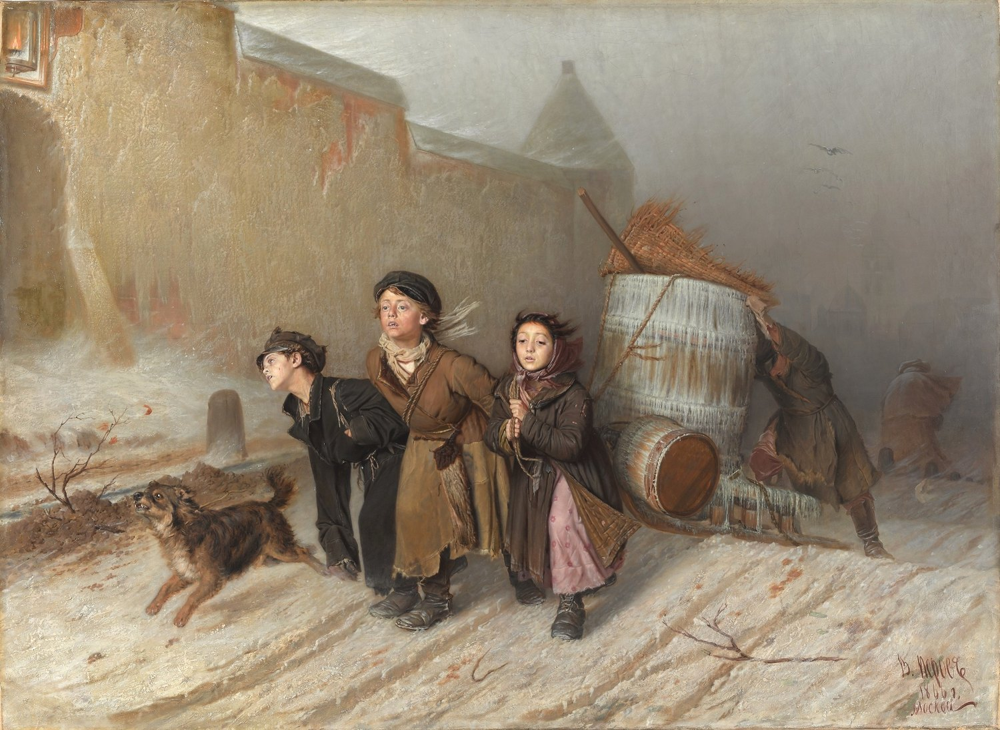
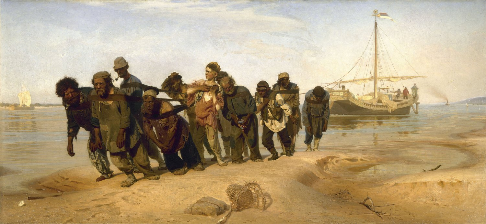
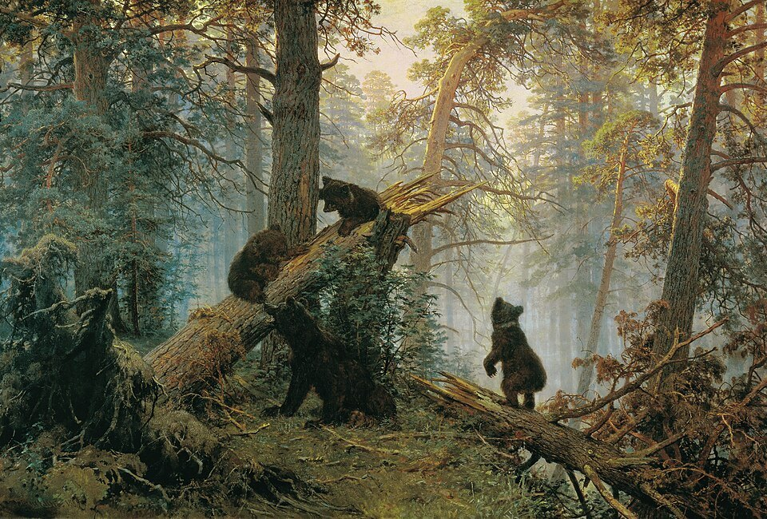
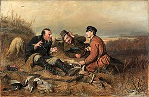
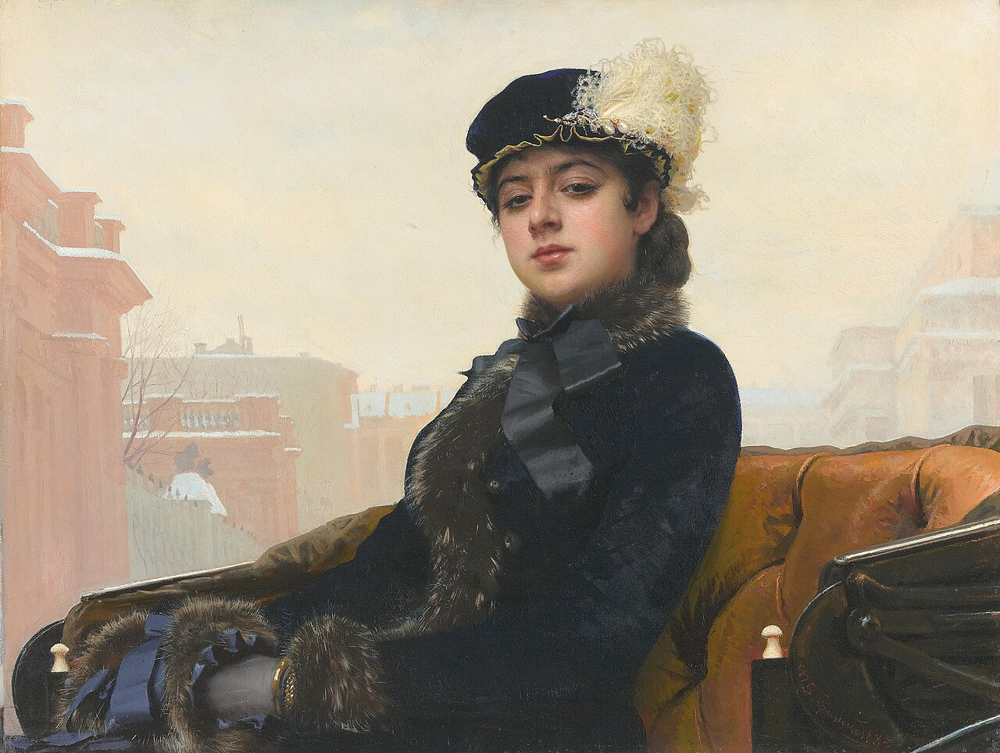

사회적 사실주의의 전사
이동파(Peredvizhniki, Передвижники)는 단순한 ‘러시아식 사실주의 화풍’이 아니라 1870년 결성된 이동미술전람회협회를 중심으로 한 실제 전시운동이다. 화가들은 제국미술아카데미의 경직된 주제와 권위에 반발하고, 작품을 러시아 여러 도시로 이동 전시하면서 동시대 사회·농민·노동·역사·러시아 자연과 사람을 직접 보여주는 사실주의를 발전시켰다.
실제로 협회를 결성하고 정기적인 이동전시를 운영한 예술운동이다.
제국미술아카데미의 주제 통제와 권위에 맞서 전시의 자율성을 추구했다.
작품을 상트페테르부르크·모스크바 밖 여러 도시로 이동시켜 관객층을 넓혔다.
농민, 노동, 재판, 종교, 역사, 도시와 자연을 중요한 주제로 삼았다.
예술을 사회와 분리된 장식이 아니라 현실을 이해하고 토론하는 수단으로 보았다.
이반 크람스코이 등 아카데미 학생들이 지정된 신화적 주제를 거부하고 학교를 떠난 사건이 상징적 전사가 된다.
페로프 등은 빈곤, 노동, 관료주의, 성직자와 사회의 모순을 동시대 주제로 그린다.
이동미술전람회협회가 조직되어 독립적인 전시 구조를 만든다.
수도에 한정되지 않고 작품을 여러 도시로 옮겨 전시하는 방식이 본격화된다.
레핀·수리코프·시시킨·레비탄 등 다양한 화가들이 사회·역사·풍경을 확장한다.



| 항목 | 프랑스 사실주의 | 러시아 이동파 |
|---|---|---|
| 상위 철학 | 동시대 평범한 현실을 미술의 중심으로 | 동일한 사실주의 철학을 러시아 사회·역사·자연에 적용 |
| 제도적 배경 | 살롱·아카데미 위계에 대한 반발 | 제국미술아카데미의 주제·전시 권위에 대한 독립운동 |
| 관객 | 파리 중심의 전시문화 | 작품을 러시아 여러 도시로 이동 전시 |
| 주요 주제 | 노동자·농민·부르주아 현실 | 농민·노동·사회문제·러시아 역사·초상·풍경 |
| 대표 | 쿠르베, 밀레, 도미에 | 크람스코이, 페로프, 레핀, 수리코프, 시시킨, 레비탄 |
| 한 문장 | “지금 존재하는 현실을 보라.” | “러시아의 현실을 러시아 사람들에게 직접 보여주라.” |
| 국가·지역·세부 사조 | 지역적 특징 | 대표 화가·제작자 |
|---|---|---|
| 상트페테르부르크 — 조직·사회 풍속 |
| 이반 크람스코이, 바실리 페로프 |
| 모스크바·전국 순회 — 사회·역사화 |
| 일리야 레핀, 바실리 수리코프 |
| 볼가·북부·지방 풍경 — 자연의 사실주의 |
| 이반 시시킨, 알렉세이 사브라소프, 이사크 레비탄 |
이동파는 러시아 사실주의의 전시 운동이다. 핵심은 양식 하나가 아니라 미술을 수도 아카데미에서 떼어 내 러시아 사회 전체와 만나게 한 데 있다.
위 표에 적힌 화가를 모두 카드로 연결했다. 이미지가 아직 없는 작품은 빈 카드를 유지해 이후 로컬 파일을 추가할 수 있게 했다.
러시아 민중의 육체 노동을 국가적 현실의 중심 주제로 끌어올렸다.
역사화가 영웅 찬양보다 군중 심리와 국가 폭력의 긴장으로 바뀐다.
러시아 자연을 민족적 정서와 연결한 이동파 풍경화의 대표적 방향이다.

이동파의 현실 관찰은 정치적 대작뿐 아니라 일상 대화와 성격 묘사에서도 나타난다.

이동파 조직의 핵심 인물이 동시대 도시 여성의 시선과 사회적 존재감을 절제된 초상으로 포착한다.
눈 녹는 들판의 계절 변화로 러시아 풍경을 일상의 정서와 연결한 선구적 작품이다.
넓은 자연과 인간의 유한성을 결합해 후기 이동파 풍경화의 심리적 깊이를 보여준다.